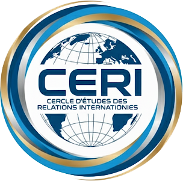

Cercle d’Étude des Relations Internationales – Un think-tank indépendant au service du dialogue et de la paix
Fondé sous le statut associatif (loi 1901), le CÉRI est un laboratoire d’idées indépendant dédié à l’analyse des enjeux internationaux, à la promotion des échanges interculturels et à l’innovation dans l’enseignement des relations internationales.
Le CÉRI est dirigé par un Bureau pluridisciplinaire, alliant expertise juridique, académique et internationale :
Arnaud de Raulin – Président, Professeur émérite de droit public
Brice Dumas – Vice-Président, Avocat à la Cour (Papeete & New York)
Aurélie Bayen-Poisson – Trésorière, Maître de conférences en sociologie et sinologie
Rejoignez-nous